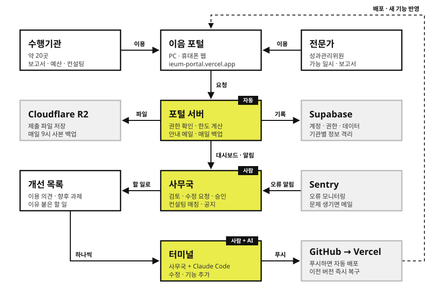

이음 포털은 「2027 국제나눔 파트너십 지원사업」에 참여하는 약 20개 수행기관과 외부 전문가, KCOC 파트너십지원부 사무국이 사업관리 업무를 한곳에서 처리하는 웹 포털입니다.
항목
내용
사업
2027 국제나눔 파트너십 지원사업 (수행기관별 3개년 지원)
운영
KCOC 파트너십지원부 (사무국)
규모
수행기관 약 20곳, 외부 전문가(성과관리위원) 수 명, 사무국 관리자 수 명 — 동시 접속 최대 30명 내외
이용 방식
웹 브라우저 (PC · 태블릿 · 휴대폰). 별도 설치 없음
계정
사무국이 발급 (자가 가입 없음)
추진 목적
업무 창구 일원화 — 보고서 제출·검토, 컨설팅 일정 조율, 예산변경 관리, 공지를 하나의 화면에서 처리합니다.
진행 현황의 실시간 파악 — 사무국이 기관별 제출 상태, 컨설팅 매칭, 예산 변경 누적을 한눈에 봅니다.
사업 규칙의 자동 적용 — 3년 이용기간, 예산변경 승인 기준과 한도, 수정 기한 같은 규칙을 시스템이 계산하고 안내합니다.
기관 정보 보호 — 기관은 자기 기관 정보만, 전문가는 담당 기관 정보만 볼 수 있도록 데이터베이스 수준에서 격리합니다.
2. 이용자와 역할
역할
누구
할 수 있는 일
관리자
파트너십지원부 사무국
전체 현황 확인, 보고서 검토·수정 요청·최종 승인, 컨설팅 일정 운영(전문가 배정·매칭 승인·Zoom 안내), 예산변경 승인 문서 처리, 공지·연간 일정·사업 설정 관리, 계정 발급과 기관 등록·삭제
수행기관
기관 담당자
자기 기관의 보고서 제출·수정본 제출, 컨설팅 희망 일시 선택과 사전 정보 작성, 선택컨설팅 신청서 제출, 내부 예산변경 입력과 승인 문서 제출, 일정·공지 확인, 담당자 정보 수정
전문가
외부 성과관리위원 · 컨설턴트
컨설팅 가능 일시 제출, 본인 담당 확정 일정과 담당 기관 사전 정보 확인, 컨설팅·현장점검 보고서 제출
3. 주요 기능
기능
설명
통합 대시보드
보고서 종류별 제출 상태 집계, 기관별 제출 현황, 승인 대기 문서, 컨설팅 접수·확정 현황, 최근 활동
자료 제출 · 검토
보고서 3종(중간 · 결과 · 최종 결과)을 버전별로 제출. 사무국이 의견 등록 → 수정 요청(기한 자동 부여) → 최종 승인. 승인본은 최종 자료실에 모임
연간 사업 일정
1 · 2 · 3차년도별 주요 일정(컨설팅 · 모니터링 · 보고 · 마감)을 한 화면에. 사무국이 편집
필수컨설팅 일정
상반기 · 하반기 회차. 전문가 가능 일시 조사 → 기관별 담당 전문가 배정 → 기관 희망 순위 선택 → 사무국 매칭 승인 → Zoom 안내 메일 자동 발송
선택컨설팅 신청
기관이 신청서(희망 분야 · 신청 사유 · 세부 질의 · 희망 전문가)를 제출 → 사무국이 신청서 확인·인쇄 후 전문가와 일시 배정
예산변경 / 사업변경
기관이 내부 예산변경을 입력하면 누적액·변경 비율을 자동 계산. 승인이 필요한 경우 문서로 제출 → 사무국 승인
공지사항 · 알림
사무국 공지 게시, 기관 첫 접속 시 미확인 알림 팝업
계정 · 기관 관리
계정 발급(기관 · 전문가 · 관리자), 참여 기관 등록, 기관 삭제(관리자 비밀번호 재확인)
활동 로그
누가 언제 무엇을 처리했는지 자동 기록 (수정·삭제 불가)
사업 설정
사업명 · 연도 · 보고서 마감 · 컨설팅 회차와 후보 일시 · 안내 메일 문구 · 공지를 화면에서 편집
4. 핵심 업무 흐름
4.1 보고서 제출 · 검토
단계
누가
무엇을
1
수행기관
보고서 파일 업로드(파일당 200MB 이하) → 상태 제출됨
2
사무국
검토 시작 → 상태 검토 중. 의견 등록(수정 필요 / 참고)
3
사무국
수정 요청 → 기관에 수정 기한(기본 7일) 부여, 알림
4
수행기관
수정본 제출 → 다시 제출됨 (2~4 반복)
5
사무국
최종 승인 → 최종 완료, 최종 자료실에 보관
4.2 필수컨설팅 일정 수립
단계
누가
무엇을
1
사무국
회차별 후보 일시 등록 (사업 설정)
2
전문가
가능한 일시 체크, 후보 외 가능 시간은 주관식으로 기입
3
사무국
기관별 담당 전문가 배정, 기관 공개 시작 일시 지정
4
수행기관
담당 전문가의 가능 일시 중 희망 순위 선택. 같은 전문가를 쓰는 다른 기관이 1순위로 고른 일시는 선점 표시
5
사무국
매칭 승인 (같은 전문가 · 같은 시간 중복 확정 차단)
6
사무국
Zoom 링크 입력 → 기관 담당자에게 안내 메일 자동 발송
4.3 예산변경
구분
기준
내부 예산변경 (기관 자체 처리)
기관 내부 결재 후 포털에 입력. 사무국 승인 불필요
승인이 필요한 변경 (문서 제출)
다음 중 하나라도 해당: 내부 변경 누적액 1천만원 초과, 목(세목) 간 전용, 신규 세목·세세목 추가, 국내/현지 예산계획 자체 변경
변경 한도
내부 변경과 승인 문서 변경을 합친 누적액이 당해년도 사업예산의 20%를 넘을 수 없음 (시스템이 등록 차단)
5. 운영 원칙
원칙
내용
3년 이용기간
기관은 선발연도부터 3년간 이용. 기간이 지나면 로그인 후 차단 안내만 표시되고 데이터 접근이 막힘 (서버에서 강제)
기관 간 정보 격리
기관은 자기 기관의 제출물 · 담당자 정보 · 예산만, 전문가는 배정된 기관 정보만 조회. 화면이 아니라 데이터베이스 권한으로 강제
계정 발급제
자가 가입 없음. 사무국이 이메일과 임시 비밀번호로 발급하고 담당자에게 전달
처리 기록
검토 · 승인 · 확정 · 계정 · 기관 처리 내역은 활동 로그에 자동 기록되며 수정·삭제 불가
되돌리기 어려운 작업 보호
기관 삭제는 관리자 비밀번호 재확인 후에만 가능. 최종 승인은 되돌리는 버튼 없음
백업
매일 오전 9시 데이터베이스 전체와 제출 파일을 자동 백업 (데이터 60일 보관, 파일 사본은 계속 보관)
6. 기대 효과
대상
효과
수행기관
제출할 보고서와 마감, 수정 요청과 기한, 컨설팅 일정, 예산 변경 여유분을 로그인 한 번으로 확인. 휴대폰에서도 이용
사무국
기관별 진행 상태를 한 화면에서 파악하고, 수정 기한 · 변경 한도 · 중복 확정 같은 규칙 확인을 시스템에 맡김. 안내 메일 자동 발송
전문가
가능 일시 제출과 담당 일정 · 사전 정보 확인을 한곳에서. 다른 전문가 · 기관 정보는 노출되지 않음
조직
처리 이력이 남아 인수인계와 감사 대응이 쉬움. 기관 개인정보를 역할별로 격리
7. 추진 경과와 향후 일정
시기
내용
2026. 9. 11.
개발 착수, 데이터베이스 · 인증 구성
2026. 9. 14.
서비스 배포, 자동 백업 · 파일 저장소 · 메일 발송 구성, 권한 검증 통과
2026. 9. 16.
컨설팅 일정 수립 흐름(전문가 가능 일시 → 담당 배정 → 희망 순위) 반영
2026. 9. 22.
사전 정보 회차별 분리, 선택컨설팅 신청서 방식 전환, 예산 총액 · 항목 전환 반영
2026. 9. 23.
기관 로고 교체, 휴대폰 · 태블릿 화면 대응, 기관 삭제 기능, 계정 관리 개선
2026. 9. 28.
외부 검토 의견 반영: 기관 정보 격리 강화, 제출 파일 백업, 스키마 정리, 오류 모니터링(Sentry) 연동
개시 전
실사용 개시 체크리스트 처리 (비밀번호 교체, 테스트 데이터 정리, 회사 메일 발송 전환, 요금제 결정)
개시 후
실제 기관 계정 배포, 1주일 집중 모니터링, 이용 의견 반영
8. 운영 환경과 비용

서비스 구조 — 노란 칸은 핵심 처리 단계(자동 · 사람 · 사람 + AI), 회색 칸은 외부 서비스. 점선은 수정 사항이 배포되어 포털에 반영되는 흐름
8.1 구성 요소
구성 요소
용도
현재 요금제
Vercel
웹 서비스 호스팅 (서울 리전), 일일 백업 크론
무료(Hobby) → Pro 월 $20 전환 (8.4 참고)
Supabase
데이터베이스 · 로그인 · 권한 (서울 리전), DB 백업 보관
무료 → Pro 월 $25 전환 (8.4 참고)
Cloudflare R2
제출 파일 저장 · 백업
무료 (10GB까지, 다운로드 요금 없음)
Claude Code
개발 · 유지보수 (코드 수정, 배포, 문서 작성)
Claude Max 5x 구독 (월 $100, 8.5 참고)
메일 발송
컨설팅 안내 · 비밀번호 재설정 메일
현재 Gmail, 회사 메일(메일플러그)로 전환 예정 — 추가 비용 없음
Sentry
오류 모니터링 (EU 리전)
무료 (월 오류 5,000건)
8.2 예상 사용량과 무료 한도
수행기관 20곳 · 사용자 40명 내외, 3개년 운영을 기준으로 추정했습니다.
항목
추정 근거
3년 예상
무료 한도 대비
제출 파일 (R2)
기관당 연 보고서 3종 × 평균 2~3개 버전 × 약 10MB + 승인 문서 · 전문가 보고서. 연 약 2~3GB, 백업 사본 포함 시 2배
약 12~18GB
2~3년차에 10GB 초과 가능. 초과분 GB당 월 $0.015 → 월 $0.1 내외
데이터베이스
텍스트 데이터 위주 (상태 · 의견 · 일정 · 예산 · 로그)
수십 MB 이하
500MB 대비 여유
DB 백업 (Supabase 저장소)
매일 JSON 덤프 × 60일 보관
수십~100MB
1GB 대비 여유
웹 트래픽 (Vercel)
동시 접속 30명 내외, 문서 파일은 R2 에서 직접 전송
월 수 GB 이하
Hobby 100GB · Pro 1TB 대비 여유
메일
컨설팅 안내 · 비밀번호 재설정, 연 수백 통
—
Gmail 일 500통 한도 대비 여유
오류 수집
오류만 수집, 성능 추적 · 세션 리플레이 미사용
월 수십 건 예상
월 5,000건 대비 여유
8.3 인프라 요금제 조합별 비용 비교
금액은 각 서비스의 공개 요금(기준일 현재) 기준이며, 원화는 1달러 = 1,400원으로 환산해 반올림했습니다. 해외 카드 결제 수수료 · 부가세 · 환율 변동은 별도입니다.
구분
구성
월
연
A. 현행 유지
전부 무료 플랜
$0
$0
B. 호스팅만 유료
Vercel Pro + 나머지 무료
$20 (약 2.8만원)
$240 (약 34만원)
C. 채택안
Vercel Pro + Supabase Pro
$45 (약 6.3만원)
$540 (약 76만원)
추가 가능 비용
발생 조건
예상 금액
R2 저장 용량 초과
파일 + 백업 사본이 10GB 를 넘을 때 (2~3년차 예상)
월 $0.1~0.5 (연 1만원 미만)
전용 도메인
vercel.app 대신 기관 도메인 사용 시. 기존 기관 도메인의 하위 주소(예: portal.기관도메인)면 무료
신규 .kr 도메인 연 2~3만원
Vercel 좌석 추가
배포 · 설정 권한자를 2명 이상 둘 때
1인당 월 $20
Sentry 유료
오류가 월 5,000건을 넘을 때 (현 규모에선 가능성 낮음)
월 $26~
8.4 Vercel Pro · Supabase Pro 가 필요한 이유
현재 사용량만 보면 무료 플랜으로도 동작합니다. 그러나 이음 포털은 20개 수행기관의 보고서 · 예산 · 담당자 정보를 3년간 보관하는 기관 공식 업무 시스템이므로, 용량이 아니라 이용 약관 · 서비스 연속성 · 데이터 복구 · 인수인계 측면에서 유료 플랜이 필요합니다.
Vercel Pro (웹 서비스 호스팅, 월 $20)
구분
무료(Hobby)의 한계
Pro 전환 시
이용 약관
개인 · 비상업 용도로 한정. 기관 업무에 쓰면 약관 위반 소지가 있고, 위반 판정 시 예고 없이 서비스가 중단될 수 있음
기관 · 업무 용도 사용이 약관상 허용됨
계정 소유 · 인수인계
개인 계정에 묶여 담당자가 바뀌면 이관이 번거로움
팀(기관) 계정으로 운영. 담당자 추가 · 교체로 인수인계
사용량 초과 시
월 트래픽 100GB 등 한도를 넘으면 다음 달까지 서비스가 멈춤 (추가 구매 불가)
한도 1TB로 상향, 넘더라도 서비스는 유지되고 초과분만 과금
자동 백업 실행
예약 작업(크론)이 지정 시각이 아닌 해당 시간대 안 임의 시점에 실행
지정 시각(매일 오전 9시)에 정확히 실행
장애 대응
서버 로그가 짧게만 보관되어 사후 원인 추적이 어려움. 공식 지원 없음
로그 보관 기간 확대, 이메일 기술 지원
Supabase Pro (데이터베이스 · 로그인, 월 $25)
구분
무료의 한계
Pro 전환 시
서비스 연속성
일주일간 접속이 없으면 프로젝트가 자동 일시정지되어 포털 전체가 멈춤. 현재는 매일 백업 작업이 접속해 막고 있으나, 이 작업이 실패하면 사업 비수기(연말 · 연초)에 중단될 수 있음
자동 일시정지 없음
데이터 백업
공식 백업 없음. 자체 JSON 백업이 유일한 수단이며, 로그인 비밀번호가 포함되지 않아 복원 시 전 사용자가 비밀번호를 다시 설정해야 함
매일 공식 백업(7일 보관) 추가 — 계정 · 비밀번호까지 포함한 전체 복원 가능. 자체 백업(60일)과 이중화
보안
기본 기능만 제공
유출된 비밀번호 사용 차단 등 계정 보안 기능 사용 가능
용량 여유
DB 500MB · 저장소 1GB
DB 8GB · 저장소 100GB — 사업 확대(기관 수 · 연차 증가)에도 여유
장애 대응
커뮤니티 지원만
이메일 기술 지원
두 서비스 모두 월 단위 결제이며 언제든 해지 · 하향할 수 있습니다. 전환 시 코드 변경이나 서비스 중단은 없습니다.
8.5 개발 · 유지보수 비용 (Claude Code)
포털은 AI 코딩 도구 Claude Code로 개발했으며, 기능 개선 · 오류 수정 · 문서 갱신 등 유지보수도 같은 방식으로 진행합니다. Claude Code 는 Anthropic 의 Claude 구독 Max 5x 요금제로 이용하며, 현재 규모의 개발 · 유지보수에 충분합니다. 담당자 1인 기준, 월 단위 구독 · 해지가 가능합니다.
요금제
용도
월
연
Max 5x
개발 · 유지보수 전반 (오류 수정, 기능 개선, 차년도 사업 규칙 반영, 설정 · 문서 변경)
$100 (약 14만원)
$1,200 (약 168만원)
8.6 예산 편성 (비목 구분)
포털 운영에 직접 드는 인프라 비용은 사업비로, 개발 · 유지보수 도구 구독료는 관리운영비로 편성합니다.
비목
항목
월
연
사업비
Vercel Pro (웹 서비스 호스팅)
$20 (약 2.8만원)
$240 (약 34만원)
Supabase Pro (데이터베이스 · 로그인)
$25 (약 3.5만원)
$300 (약 42만원)
소계
$45 (약 6.3만원)
$540 (약 76만원)
관리운영비
Claude Code Max 5x (개발 · 유지보수)
$100 (약 14만원)
$1,200 (약 168만원)
합계
$145 (약 20.3만원)
$1,740 (약 244만원)
Cloudflare R2 · Sentry · 메일 발송은 무료 범위 안에서 운영하며, R2 용량 초과 등 추가 비용은 연 1만원 미만으로 예상됩니다. 모두 달러 결제이므로 환율 · 해외 결제 수수료 변동에 대비해 편성액에 5~10% 여유를 두는 것을 권합니다. 비목 명칭은 기관 회계 기준에 맞게 조정합니다.
9. 향후 과제
과제
시기
내용
회사 메일 발송 전환
개시 전
안내 메일 발신자를 회사 메일(메일플러그)로 변경. 경영팀 SMTP 허용 필요
요금제 결정
개시 전
Vercel Pro · Supabase Pro 전환(사업비), Claude Code Max 5x 구독(관리운영비) 결재 (8.4 ~ 8.6 참고)